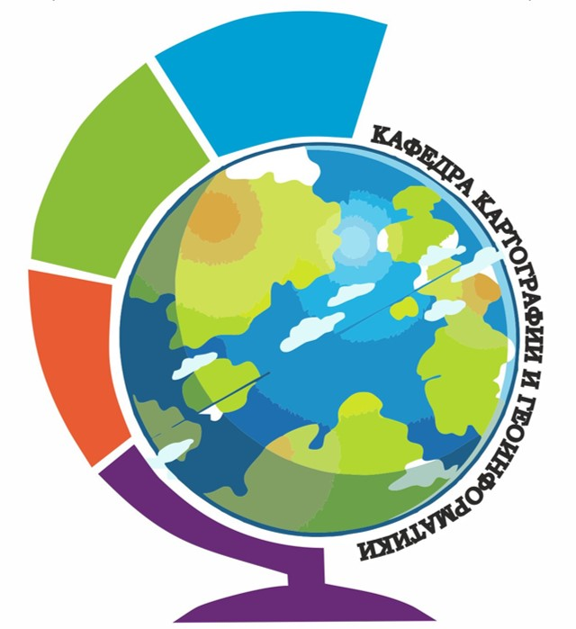
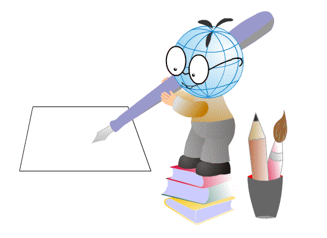

Лисицкий Д.В.,
Комиссарова Е.В.,
Колесников А.А.
МУЛЬТИМЕДИЙНАЯ КАРТОГРАФИЯ

Оглавление
Введение
1 Мультимедийные средства и технологии в картографии
1.1 Краткие сведения о применении мультимедийных средств и технологий в картографии
1.2 Основные термины и понятия, связанные с мультимедийной картографией
2 Мультимедийные картографические произведения
2.1 Понятие мультимедийного атласа и мультимедийной карты
2.2 Виды и примеры мультимедийных картографических произведений
3 Создание мультимедийных картографических произведений
3.1 Принципиальные особенности и методы создания мультимедийного картографического произведения
3.2 Базовые составляющие мультимедийной картографии
3.3 Форматы и технологии представления графической информации в мультимедийной картографии
3.4 Технологии представления мультимедийной информации
3.5 Технологии оперирования мультимедийными данными
3.6 Технология создания мультимедийного картографического произведения
4 Особенности анимации для мультимедийных картографических произведений
4.1 Сущность и классификация картографических анимаций
4.2 Общие характеристики анимаций в картографическом аспекте
4.3 Анимации в интерфейсе картографического произведения
4.4 Эффекты анимации для карты
4.5 Эффекты анимации для объектов карты
4.6 Примеры мультимедийных картографических произведений
Вопросы для самоконтроля
Заключение
Библиографический список
Росреестр